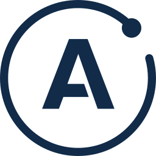

Jul 2025 to now
Full Stack Developer
Taabi Mobility, a CEAT company, Bengaluru
Excellence in execution award, 20263 years of React, Node.js and PostgreSQL in production. Now NestJS on AWS and LangGraph pipelines.
A FastAPI and LangGraph pipeline maps a legacy system's columns onto a 40-table schema, one step at a time. A person approves each mapping in the Next.js review screen. See the stack
pat_dob is text in DDMMYYYY. Parse it with TO_DATE.A hospital platform for appointments, records, billing, wards and video consults. One Postgres with a schema per service, reached through API Gateway and a VPC Link, so there is no load balancer to pay for.
At Taabi Mobility, IoT data flows through Node.js and Apollo GraphQL into React views.
Taabi Mobility, a CEAT company, Bengaluru
Excellence in execution award, 2026
A hospital platform and an LLM data migration, remote
Taabi Mobility, Bengaluru
Healink, remote
Self-employed, remote
Visa2fly, remote
Sikkim Manipal University, CGPA 9.0; Presidency University
React and Node.js every day since 2022. AWS, Terraform and LangGraph on the freelance systems.

Apollo